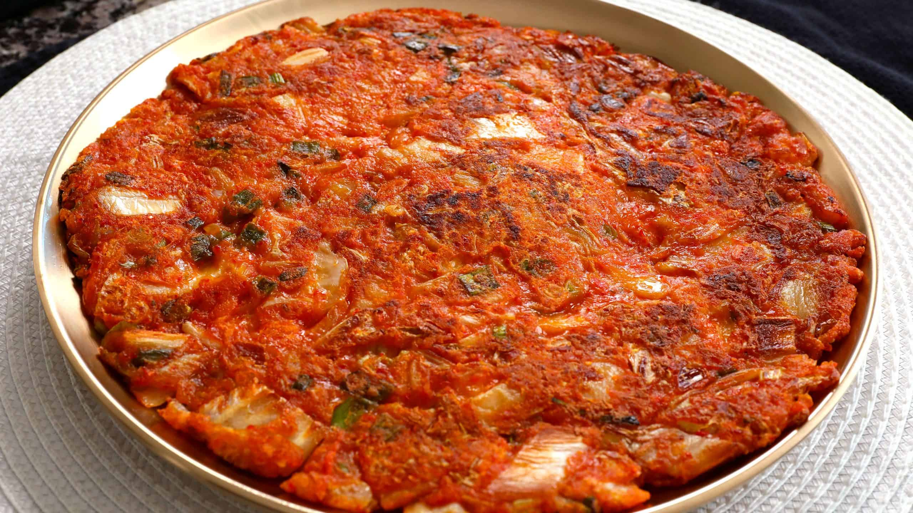

Kimchi Pancake

Description
Kimchi pancake, or kimchi buchimgae or kimchi jeon,is primarily made with sliced kimchi, flour batter, and sometimes other vegetables.
However, meat (ground pork) is also often added.
Ingredients
- 1/2 pound well-fermented napa cabbage kimchi, chopped into small pieces
- 3 scallions, chopped
- 1/2 teaspoon sugar
- 1/2 cup all-purpose flour
- 1/2 cup water
- 4 tablespoons vegetable oil
Steps
- Combine the kimchi, kimchi brine, scallions, sugar, flour, and water in a medium bowl and mix well with spoon
- Heat a 12-inch nonstick skillet over medium heat (if you don't have a 12-inch skillet, use a smaller skillet to make 2 pancakes)
- Add 2 tablespoonsof the vegetable oil and swirl to coat the bottom of the pan
- Pour the batter into the pan and spread it with the back of a spoon or a spatula to make a large circle
- Cook until the bottom is golden brown and crisp, 3 to 5 minutes
- Carefully turn the pancake over. Drizzle the remaining 2 tablespoons of oil around the edges of the skillet, then lift the pancake with a thin spatula to allow the oil to run underneath and tilt the pan to spread it evenly
- Cook until the bottom of the pancake is light golden brown and crisp, 3 to 5 minutes
- Flip it one more time and cook for another minute
- Slide onto a large serving platter and serve immediately